The First World Chess Championship
St. Louis, 1886
The first official World Chess Championship match in history — Wilhelm Steinitz versus Johannes Zukertort — was played across three American cities from January to March 1886: New York, St. Louis, and New Orleans. The St. Louis games were played at the Harmonie Club, 18th and Olive Streets.
Zukertort arrived in St. Louis leading 4–1. He left tied 4–4. Steinitz won three straight games on this ground and turned the entire match. He went on to win 10–5 in New Orleans and became the first recognized World Chess Champion.
In the 140 years since, no World Chess Championship match has returned to St. Louis.
In that same span, St. Louis became the Chess Capital of the United States — recognized by Congress, home to the Saint Louis Chess Club, the World Chess Hall of Fame, the Sinquefield Cup, the U.S. Championship, and a broadcast operation that reaches over 100,000 live viewers worldwide.
And so it returns. 140 years later.
Two buildings stand ready — a 1924 Neoclassical dome and a 1920s Gothic Revival sanctuary — at the intersection of Delmar, Trinity, and Washington in University City. Together, they offer something no previous World Championship venue has had: architecture built for ceremony, acoustics shaped by a century of congregation, and a city that already believes chess matters.
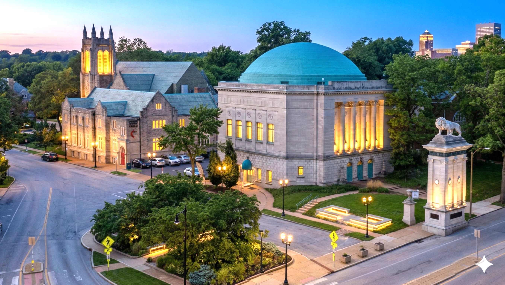
6900 Delmar (dome) and 6901 Washington (bell tower) — University City, Missouri
6901 Washington Avenue
The Venue
A Gothic Revival church built in the 1920s. Stone masonry, pointed arch windows, stained glass intact, a bell tower visible from blocks away. 21,884 square feet. A sanctuary with raked seating, a balcony, and a chancel that faces the congregation like a stage faces an audience.
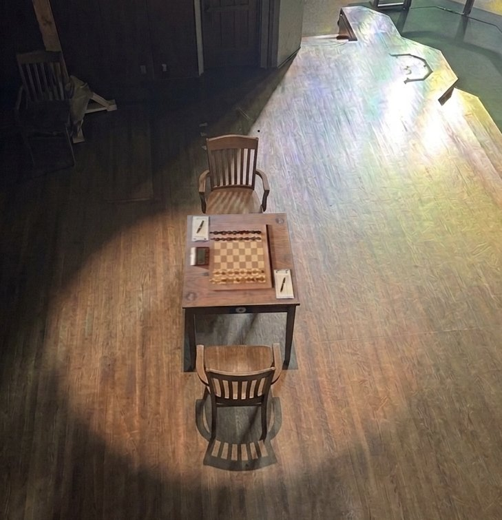
6901 Washington — chess table on the sanctuary stage, stained glass light on the board
The Fish Tank
Soundproof Match Enclosure
FIDE World Championship matches are played inside a soundproof glass enclosure — triple-pane acoustic glass with a controlled environment system. The players sit at a single board. The audience watches in silence. The enclosure sits on the chancel — the raised platform at the front of the sanctuary, exactly where the altar once stood.
The organ chambers flanking the chancel — elevated rooms with direct sightlines to the board — become VIP viewing galleries. Unprecedented overhead views directly onto the chess board. Private. Intimate. The kind of vantage that doesn't exist at any previous World Championship venue.
Below the chancel, the existing classroom and office spaces convert to player preparation and recovery suites — each with a cot, desk, private en-suite bathroom, and exercise equipment. Symmetrical. Identical. FIDE-compliant.
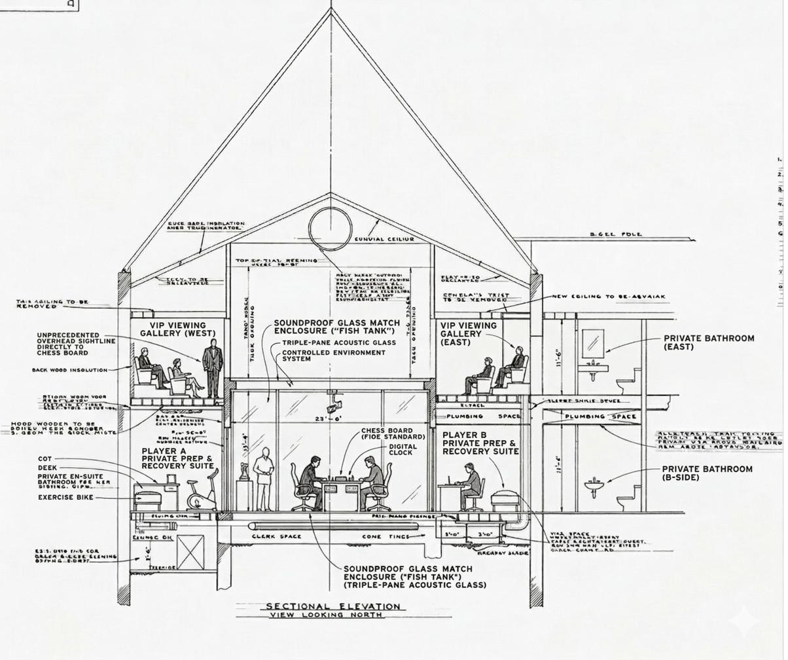
Sectional Elevation — View Looking North — Championship Configuration
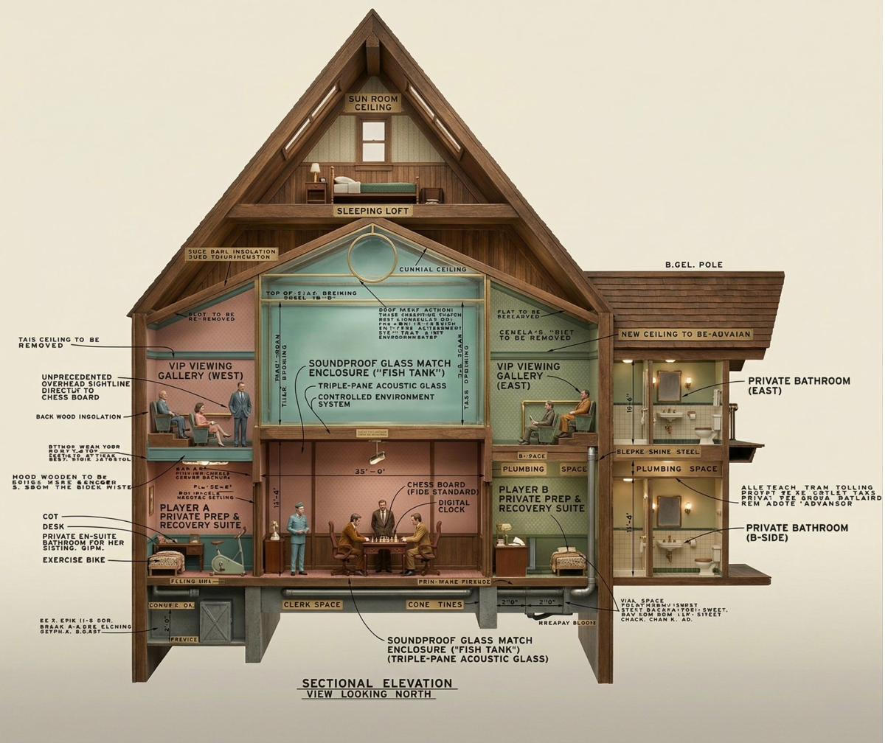
Visionary Arena Concept — Sectional Model
~310
Sanctuary seats + balcony
23'–8"
Chancel span
21,884
Total SF
FIDE minimum stage requirement: 15–20 ft wide × 10–15 ft deep. The chancel at 6901 exceeds this comfortably. The raked sanctuary seating, the balcony, the Gothic verticality — this is a space designed for focused attention on a single elevated point. It has been doing this for a century.
The Four Corners
Two Buildings, One Block
At the intersection of Delmar Boulevard, Trinity Avenue, and Washington Avenue in University City — surrounded by COCA (Center of Creative Arts) and the Washington University Music Center — two churches built four years apart sit on a single block. Both are being transformed into a cultural campus. Both buildings are owned, not leased.
6900 Delmar (dome) and 6901 Washington (bell tower)
6901 Washington — Mystery
The Sanctuary
Gothic Revival. Stone masonry, stained glass, bell tower. A sanctuary with raked seating and a balcony. Ten classrooms, a fellowship hall, kitchen, offices, and a library. 21,884 square feet. The building that becomes the championship venue — and continues as a performance, event, and cultural space long after the match ends.
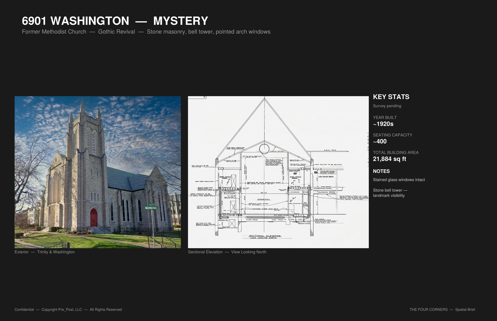
6901 Washington Avenue — Exterior
6900 Delmar — Reason
The Dome
Former First Church of Christ, Scientist. Completed 1924. T.P. Barnett Co., Architects. Individually listed on the National Register of Historic Places. A 78-foot coffered plaster dome suspended from a 1927 steel truss roof structure. Original chandelier hoist system intact. Accessible catwalk in the 23-foot void above the dome. Spiral staircases. Reading rooms. A foyer and mezzanine wrapped around the auditorium.
78 ft
Dome diameter
~48 ft
Floor to apex
~12,000
SF all levels
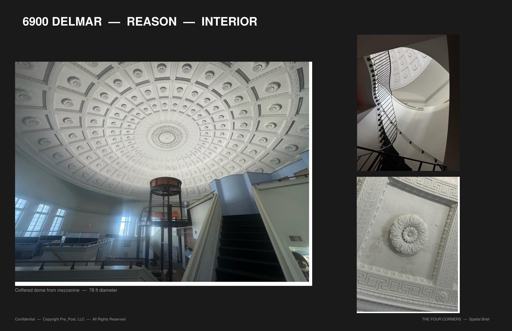
6900 Delmar — coffered dome from the mezzanine
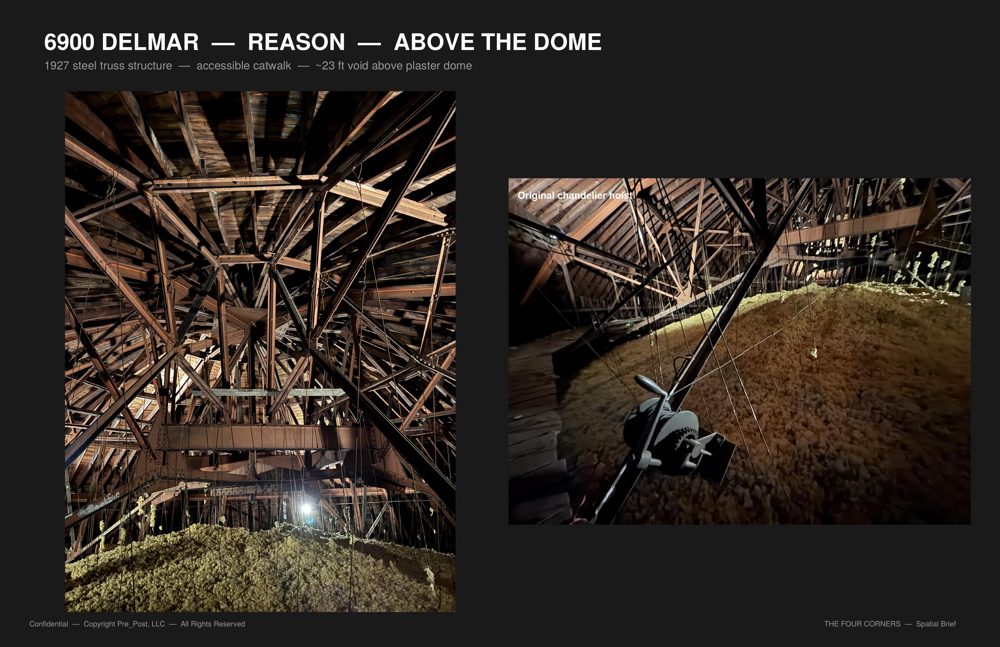
Above the dome — 1927 steel truss structure, original chandelier hoist
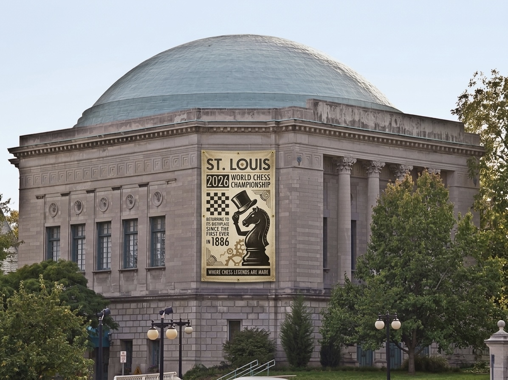
6900 Delmar — signage visualization
STL vs STL
St. Louis Playing for Its Future
A custom chess set designed for St. Louis. Every piece represents a civic landmark, cultural institution, or identity. The King is the Saint Louis Chess Club. The Rooks are the two buildings — 6900 Delmar and 6901 Washington. The Queen carries the rivers and the fleur-de-lis. The Knight is a Budweiser Clydesdale. The Bishops bear the Cardinals and the Blues. The Pawns are fleur-de-lis.
Red and gold — from the city flag. Red for the field: courage, the blood that built this place. Gold for the bezant: the city itself, the convergence point. The distinction is finish, not allegiance. Both sides are St. Louis.


The St. Louis Chess Set — Gold and Red
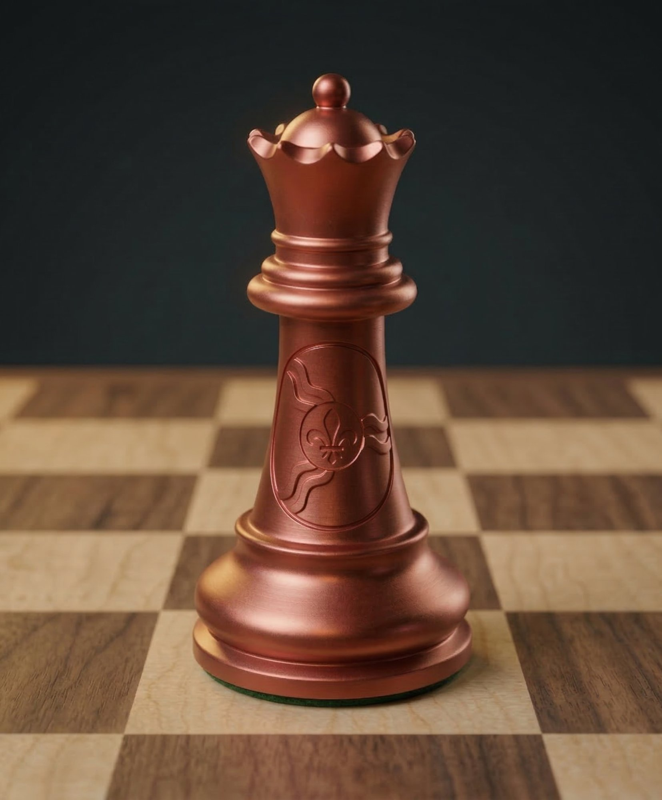
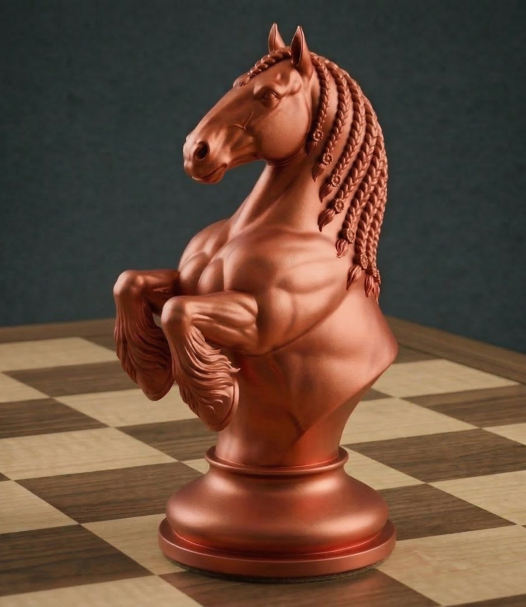
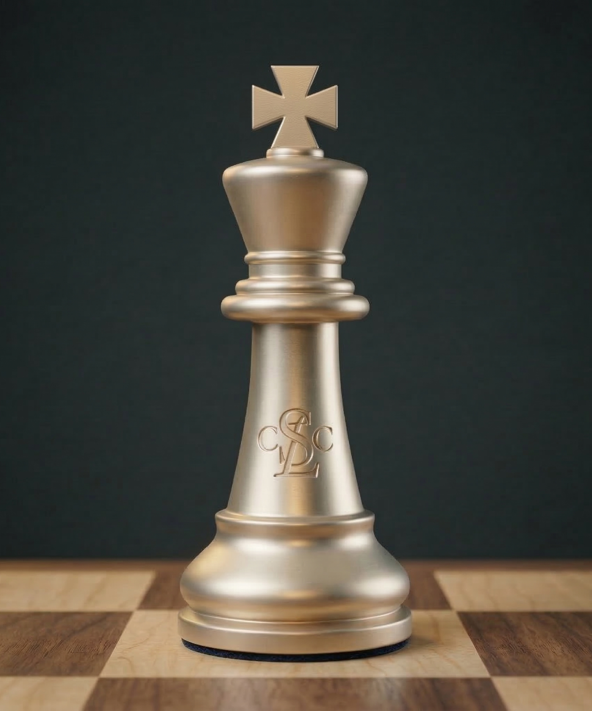
Queen (The Rivers) · Knight (Clydesdale) · King (Chess Club)
This set was conceived, designed, and fabricated in weeks — from a conversation at a coffee shop to a physical object in hand. It demonstrates a creative pipeline: the ability to take an idea, give it form, and put it in someone's hands while the conversation is still warm. The venue is a different kind of project — architecture, engineering, historic preservation, construction. But the instinct is the same: move from vision to reality, and let the objects speak for themselves.
The full set — board design, piece descriptions, and fabrication detail — is live at:
micahroufa.github.io/stlchess
micahroufa.github.io/stlchess
The Window
The Moment Is Now
The FIDE Candidates Tournament is underway in Cyprus. Eight grandmasters are competing for the right to challenge World Champion Gukesh Dommaraju. Two of them are American.
Candidates Standings — Round 1 of 14
| # | Player | Rating | Score |
|---|---|---|---|
| 1 | 🇺🇸 Fabiano Caruana | 2804 | — |
| 2 | 🇺🇸 Hikaru Nakamura | 2810 | — |
| 3 | Praggnanandhaa R. | 2773 | — |
| 4 | Anish Giri | 2761 | — |
| 5 | Wei Yi | 2755 | — |
| 6 | Javokhir Sindarov | 2747 | — |
| 7 | Matthias Bluebaum | 2713 | — |
| 8 | Andrey Esipenko | 2709 | — |
Live games: lichess.org/broadcast
March 28 – April 16, 2026
FIDE Candidates Tournament — Paphos, Cyprus. Caruana and Nakamura are both in the field. If either wins, the next World Champion could be American — and St. Louis will be at the center of the chess world.
April – May 2026
Venue bidding opens. FIDE accepts bids for the World Championship match venue. Bid requires a €300,000 bank guarantee and a formal application. Players inspect the venue two days before the match begins.
November 2026
World Chess Championship Match. The challenger faces Gukesh Dommaraju. 14 games. The most-watched event in chess. The venue and the host city become part of the permanent record.
St. Louis already hosts the Grand Chess Tour Finals, the Sinquefield Cup, and the U.S. Championship. The broadcast infrastructure exists. The institutional knowledge exists. The audience exists. What doesn't yet exist is a venue that matches the ambition.
Come see the buildings.